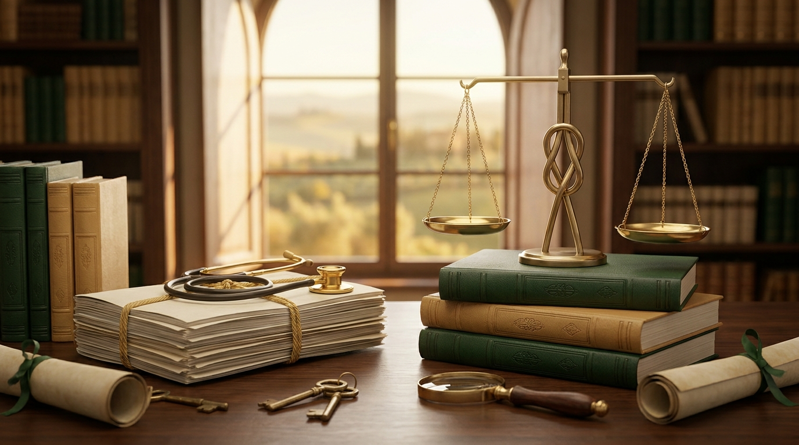

Rapporto PiT Salute di Cittadinanzattiva: tutela del diritto alla salute e ruolo del terzo settore
Cittadinanzattiva ha diffuso una nuova edizione del Rapporto PiT Salute, che raccoglie segnalazioni dei cittadini su tempi di attesa, accesso alle cure e qualità dei servizi sanitari. Il documento conferma il peso del terzo settore nella tutela del diritto alla salute, tra azione individuale e advocacy collettiva. Vediamo cosa dice la normativa e quali strumenti concreti restano a disposizione di chi subisce una negazione o un ritardo nelle prestazioni.

Di cosa parliamo
Secondo i dati diffusi da Cittadinanzattiva attraverso il Rapporto PiT Salute, le criticità più segnalate dai cittadini restano i tempi di attesa per visite ed esami, le difficoltà di accesso alle prestazioni e la disomogeneità territoriale dei servizi.
Il Rapporto non ha valore normativo. È però una fonte utile per leggere lo scarto tra diritti riconosciuti dalla legge e loro effettiva esigibilità. Su questo scarto si gioca buona parte della tutela del cittadino-paziente.
Il quadro normativo
Il diritto alla salute trova fondamento nell'art. 32 della Costituzione e si articola in una pluralità di norme settoriali.
La Legge 210/1992 disciplina l'indennizzo a favore dei soggetti danneggiati da vaccinazioni obbligatorie, trasfusioni ed emoderivati. È uno strumento autonomo rispetto all'azione risarcitoria ordinaria: opera su base indennitaria, a prescindere dall'accertamento di una colpa.
La Legge 38/2010 ha riconosciuto le cure palliative e la terapia del dolore come diritto soggettivo del cittadino, imponendo alle strutture sanitarie obblighi organizzativi precisi. Non si tratta di una mera direttiva programmatica: la negazione di tali cure può fondare una pretesa azionabile.
Sul fronte delle liste d'attesa, la disciplina recente è stata introdotta dal D.L. 73/2024 (cosiddetto decreto liste d'attesa), convertito con modificazioni dalla Legge 107/2024. Il provvedimento prevede, tra l'altro, poteri sostitutivi in capo a un organismo di verifica e meccanismi volti a garantire il rispetto dei tempi massimi di erogazione delle prestazioni.
Un profilo spesso frainteso riguarda l'attività libero-professionale intramuraria (intramoenia). Quando la struttura pubblica non riesce a erogare una prestazione entro i tempi massimi previsti, l'assistito può accedere alla prestazione in regime di intramoenia pagando il solo ticket: l'eventuale differenza tra la tariffa intramoenia e il ticket è a carico della struttura, non del cittadino.
L'erogazione delle prestazioni specialistiche, infine, è governata dai Livelli Essenziali di Assistenza (LEA) definiti dal DPCM 12 gennaio 2017 e dal relativo nomenclatore tariffario, oggetto di successivi aggiornamenti ministeriali. La verifica di quanto rientra nei LEA è il primo passo per capire cosa il Servizio Sanitario Nazionale è tenuto a garantire.
Il ruolo del terzo settore
Il D.Lgs. 117/2017 (Codice del Terzo settore) inquadra le finalità di interesse generale degli enti, tra cui la tutela dei diritti e la promozione della salute. Organizzazioni come Cittadinanzattiva operano su due piani distinti.
Sul piano individuale assistono il singolo cittadino nella presentazione di reclami, istanze e segnalazioni alle aziende sanitarie.
Sul piano collettivo svolgono attività di advocacy: raccolgono dati, segnalano disfunzioni sistemiche e incidono sul processo legislativo. Il Rapporto PiT Salute è espressione tipica di questa seconda dimensione.
Cosa cambia per il cittadino-paziente
Per chi subisce un ritardo o una negazione di cure, conoscere il perimetro dei propri diritti è decisivo. Una prestazione inclusa nei LEA e non erogata nei tempi massimi non è un disservizio inevitabile: è una possibile lesione di un diritto.
La documentazione del percorso, dalla prescrizione alla risposta della struttura, è ciò che trasforma una lamentela in una posizione difendibile.
Cosa fare in concreto
- Conserva prescrizioni, prenotazioni, referti e ogni comunicazione con la ASL: la prova del ritardo o del diniego parte da qui.
- Verifica se la prestazione richiesta rientra nei LEA e quali sono i tempi massimi previsti per la sua classe di priorità.
- Presenta un reclamo formale all'Ufficio Relazioni con il Pubblico (URP) della struttura, indicando date e riferimenti, e conserva la ricevuta.
- Informati sulla possibilità di accedere alla prestazione in intramoenia pagando il solo ticket, qualora i tempi massimi non vengano rispettati.
- In presenza di un danno da negazione o ritardo di cura, può essere opportuno verificare i termini per agire, che variano secondo la fattispecie e la natura della pretesa (risarcitoria o indennitaria).
Disclaimer
Contributo informativo a cura di Tamburro & Partners Avvocati. Non costituisce parere legale.
Ogni ente del terzo settore ha la sua storia.
Se rappresenti un ETS e vuoi un confronto su governance, RUNTS o fiscalità, scrivi allo studio. Ti rispondiamo entro un giorno lavorativo.